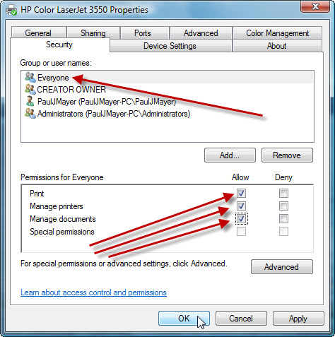

Установка и решение проблем с Oracle Primavera P6 Version 8.2 (ред. 3)
Primavera P6 версии 8.2 поставляется вместе с Oracle 10g Express Edition и, при установке в Standalone-режиме (через Setup.exe), она устанавливается автоматически. При установке могут возникнуть некоторые проблемы, которые мы сегодня и попытаемся избежать.
Сразу предупреждаю, что установка на контроллер домена невозможна! Пробовал сам, искал в интернете - ни у кого не получилось это сделать. Возможно, это политика Oracle, которые не дают ставить бесплатную СУБД в явно корпоративных средах.
Также ходят слухи, что Oracle 10g XE отказывается устанавливаться под доменным пользователем, даже если он состоит в группе Администраторы. Так что ставим под локальным администратором от греха подальше.
Саму установку можно производить по этому видео, все мои примеры ниже указаны для конкретных версий приложений и на Windows 7 x64.
Измените имя компьютера, чтобы там не было русских символов. И лучше вообще не использовать отличные от английского алфавита символы. Иначе могут быть проблемы с запуском службы-слушателя OracleXETNSListener по умолчанию и вы не сможете подключиться к БД. Вообще, в списке сервисов должны присутствовать и быть запущены две службы: OracleServiceXE - собственно БД и слушательOracleXETNSListener . Остальные нас не интересуют.
Oracle Database требует ряд системных переменных среды при работе у установке, но установщик их не будет создавать (однако Path поправит), поэтому их надо предварительно добавить вручную (Компьютер — Свойства — Дополнительные параметры системы — Дополнительно — Переменные среды… — Системные переменные — Создать…):
Имя переменной: ORACLE_HOME
Значение переменной (сравните вашу версию и путь установки!):C:\oraclexe\app\oracle\product\10.2.0\server
Имя переменной: JAVA_HOME
Значение переменной (сравните вашу версию и путь установки!):C:\Program Files (x86)\Java\jre6
Есть огромная вероятность, что СУБД встанет не с первого раза. И даже не со второго. После установки перезагружаемся и, через пару минут после полной загрузки компа, проверяем веб-службу менеджера Oracle: http://localhost:8080/apex/
Важно: через стандартный ярлык Go to Database Home Page, который указывал на http://127.0.0.1:8080/apex у меня веб-ка вообще не открывалась.
Если веб-ка открывается и запрашивает пароль - то полдела сделано. Логин - SYS, пароль - вы указали при установке.
Далее самое интересное - запуск под доменным пользователем. Сначала добавим текущего пользователя в локальную группуORA_DBA. Далее при создании подключения используем следующие настройки:
База данных - PMDB
Driver type - Oracle
Oracle Connection String - XE
Database Alias - PMDB
Username - PUBPRM$PM
Password - тот же, что и для SYS (указали при установке)
Если появляется ошибка: "ORA-12638: Credential retrieval failed", то следует изменить файл sqlnet.ora, который находится по адресу:C:\oraclexe\app\oracle\product\10.2.0\server\NETWORK\ADMIN. Находим строчку SQLNET.AUTHENTICATION_SERVICES= (NTS) и меняем ее значение на
SQLNET.AUTHENTICATION_SERVICES= (NONE).
При появлении ошибки при печати "Printer Selected is Invalid" следует в свойствах принтера по умолчанию во вкладке безопасность разрешить группе "Все" полный доступ (поставить все галочки, как на рисунке ниже)

При появлении ошибки "ORA-12154: TNS:could not resolve the connect identifier specified" рекомендую посмотреть еще вот это: Configure Oracle Instantclient for Primavera P6 Version 7
Дополнительная информация, расширенные системные переменные среды можете посмотреть тут.